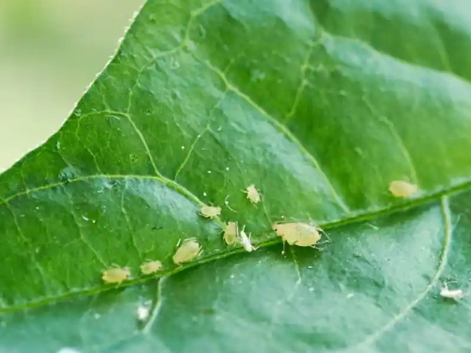
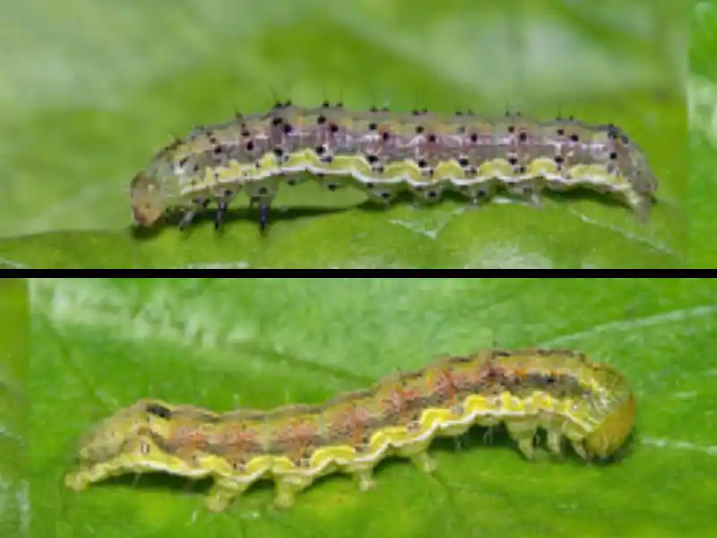
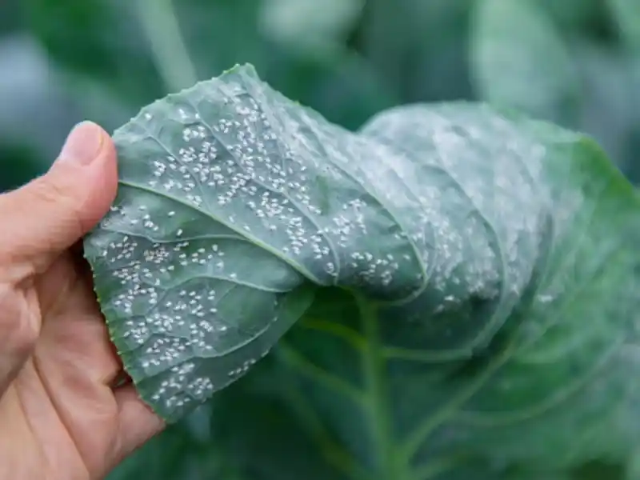
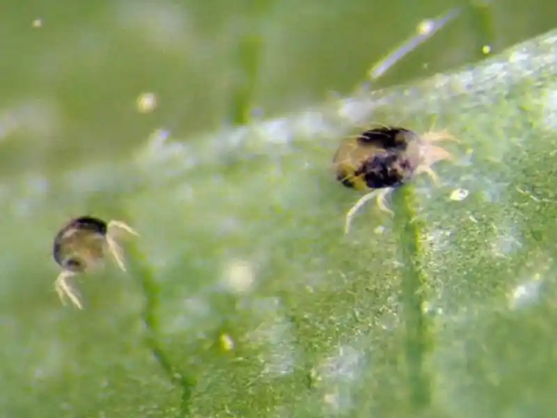
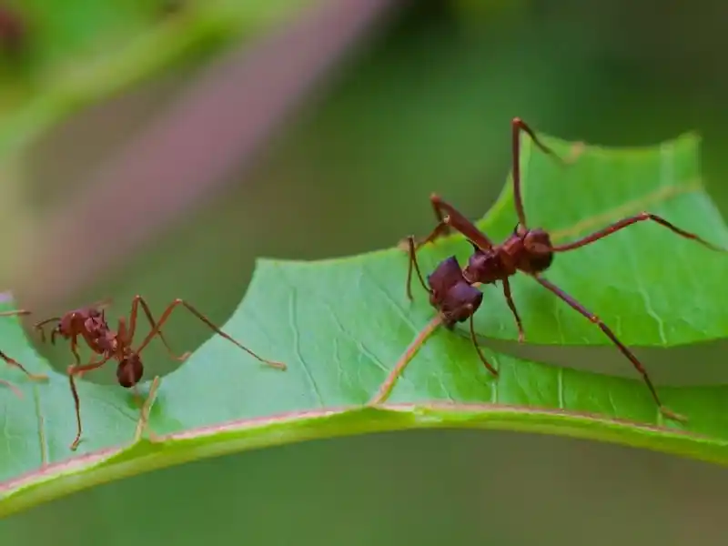
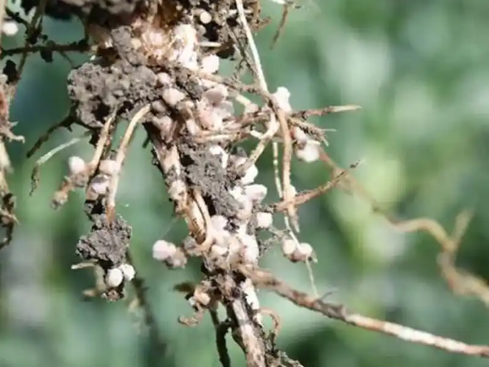

Manejo Integrado de Pragas e Doenças
Guia visual para identificação e controle sustentável em hortaliças do DF — foco em pequenas propriedades
Princípio do MIP
Nem toda praga precisa ser eliminada! O objetivo é manter a população abaixo do nível econômico de dano — a menor densidade que causa prejuízo financeiro. Isso preserva inimigos naturais, reduz custos com agrotóxicos e protege sua saúde e o meio ambiente.
IMPORTANTE!
Este guia é um recurso técnico baseado em evidências para auxiliar no manejo de plantas daninhas. Ele não substitui a assistência técnica personalizada. Sempre consulte um profissional habilitado para recomendações específicas à sua propriedade, considerando as condições locais e características do seu sistema produtivo.
Não há responsabilidade por danos causados por aplicação inadequada das informações aqui contidas. O manejo de pragas e doenças deve ser realizado com cuidado, seguindo as melhores práticas e orientações técnicas para garantir a sustentabilidade do sistema produtivo e a segurança do produtor.
Fundamentos do Manejo Integrado de Pragas (MIP)
O MIP é uma estratégia holística que combina métodos preventivos, culturais, biológicos e, quando necessário, químicos de baixo impacto. Para o pequeno produtor, significa mudar de uma postura reativa (aplicar agrotóxico quando vê a praga) para uma postura proativa (prevenir e manter o equilíbrio do ecossistema).
Prevenção
Boas Práticas Agrícolas, sementes resistentes, rotação de culturas, solo saudável
Monitoramento
Observação sistemática do campo para detectar problemas antes que se agravem
Intervenção Direcionada
Apenas quando necessário, priorizando métodos menos agressivos (biológicos, físicos, extratos vegetais)
Pilar Central: Monitoramento Constante
O monitoramento é a base para decisões informadas. Em vez de pulverizar em datas fixas, aprenda a "ler" suas plantas:
- Inspeção visual: Verifique a face inferior das folhas e brotações novas — locais preferidos de pulgões e ácaros
- Use uma lupa de bolso: Revela organismos microscópicos e sintomas iniciais
- Registre observações: Anote data, local, sintoma e ação tomada para aprender com cada ciclo
- Armadilhas adesivas amarelas: Ferramenta simples para monitorar insetos voadores como mosca-branca e pulgões
Diagnóstico Visual: Identificando Sinais e Sintomas
Um diagnóstico correto evita tratamentos desnecessários. Entenda a diferença: Sinais = o agente causador visível (fungo, inseto, bactéria); Sintomas = a alteração na planta (manchas, murcha, deformação).
| Tipo de Sintoma | Possível Causa Biótica (Organismo Vivo) | Possível Causa Abiótica (Fator Não Vivo) |
|---|---|---|
| Manchas angulares/pontiagudas | Bactérias (Pseudomonas) | Queimadura por salinidade |
| Manchas redondas/fofas | Fungos (Cladosporium, Alternaria) | Excesso de umidade relativa |
| Amarelamento generalizado | Deficiência de N, Vírus, Pulgões | Deficiência de Ferro, drenagem ruim |
| Necrose (tecido seco) | Fungos, seca do solo | Falta de irrigação, temperatura extrema |
| Deformações (enrolamento) | Ácaros, Pulgões, Vírus | Herbicidas voláteis, estresse térmico |
| Galhas (tumorações) | Nematoides | — |
| Furos/raspagens | Lagartas, Formigas cortadeiras | Roedores, dano mecânico |
- Dano localizado em poucas plantas? → Possível praga específica ou foco de doença
- Dano generalizado em toda a área? → Possível fator abiótico (clima, solo, manejo)
- Sintomas apenas em folhas novas? → Possível praga sugadora (pulgão, ácaro) ou vírus
- Sintomas em folhas velhas? → Possível deficiência nutricional ou doença de solo
Onde olhar:
- Face inferior das folhas (pulgões, ácaros, ovos de insetos)
- Brotos novos e meristemos (sintomas iniciais de vírus)
- Base do caule e solo próximo (formigas, nematoides, podridões)
- Frutos e flores (lagartas, moscas, manchas)
O que procurar: insetos vivos, teias finas, exsudação viscosa, mofo, ovos, galhas.
Perguntas-chave:
- Choveu muito ou faltou água recentemente?
- Aplicou algum produto (adubo, defensivo) nas últimas 48h?
- A temperatura esteve muito alta ou baixa?
- Houve vento forte que possa ter causado deriva de herbicida?
- O solo está compactado ou mal drenado?
Pragas Comuns em Hortaliças do DF
Clique em cada praga para ver detalhes: culturas afetadas, sintomas-chave e estratégias de controle agroecológico.
Pulgões (Áfidos)
Alto
Culturas: Alface, Repolho, Tomate, Cebolinha
Lagartas Mastigadoras
Crítico
Culturas: Tomate, Pepino, Mandioca, Couve, Repolho
Mosca-Branca
Alto
Culturas: Tomate, Pepino, Pimentão, Beterraba
Ácaros (Tetranychus)
Médio
Culturas: Tomate, Pepino, Alface, Couve
Formigas Cortadeiras/Sauvas
Crítico
Culturas: Mandioca, Alface, Beterraba
Nematoides
Alto
Culturas: Mandioca, Alface, Cenoura
Doenças Biotróficas e Anomalias Fisiológicas
Doenças são causadas por patógenos (fungos, bactérias, vírus, nematoides). Anomalias fisiológicas têm causas abióticas (clima, solo, manejo). Distinguir é essencial para o tratamento correto.
Sinais típicos: Mofo branco/cinza/púrpura, manchas com anéis concêntricos, pó branco (oídio).
Exemplos no DF:
- Míldio: Manchas amareladas na face superior, mofo acinzentado na inferior (alface, couve)
- Oídio: Pó branco em folhas e caules (tomate, pepino)
- Mancha de Alternaria: Manchas escuras com anéis (repolho, couve)
Prevenção e controle:
- Irrigação por gotejamento (evita molhar folhas)
- Espaçamento adequado para ventilação
- Remoção de folhas velhas e restos culturais
- Calda bordalesa ou sulfato de cobre (uso criterioso)
- Biofungicidas à base de Trichoderma
Sinais típicos: Manchas angulares encharcadas, exsudação viscosa, podridão mole com odor.
Exemplos no DF:
- Podridão mole (Erwinia): Tecidos aquosos e malcheirosos (alface, beterraba)
- Mancha bacteriana (Pseudomonas): Manchas angulares com halo amarelo (tomate, pimentão)
Prevenção e controle:
- Evitar trabalho no campo com folhas molhadas
- Desinfetar ferramentas entre plantas
- Usar sementes tratadas termicamente
- Eliminar plantas infectadas imediatamente
- Rotacionar culturas por 2-3 anos
Sinais típicos: Mosaico (manchas amarelo/verde), enrolamento, nanismo, brotos deformados.
Exemplos no DF:
- Vírus do mosaico do tomate (ToMV)
- Vírus Y da batata (transmitido por pulgões)
Prevenção e controle:
- Controlar vetores (pulgões, mosca-branca, trips)
- Usar variedades resistentes quando disponíveis
- Eliminar plantas hospedeiras alternativas (ervas daninhas)
- Redes de proteção contra insetos em cultivos protegidos
- Atenção: Não há cura — plantas infectadas devem ser removidas
Causas comuns no DF:
- Deficiência de cálcio: Pontas murchas em alface/beterraba ("tip burn")
- Estresse hídrico: Murcha, amarelamento de bordas, crescimento lento
- Excesso de irrigação: Apodrecimento de raízes, murcha vascular
- Queimadura química: Lesões foliares por erro de aplicação de defensivos
- Deriva de herbicida: Deformações em brotos de plantas sensíveis
Como evitar:
- Análise de solo e foliar periódica
- Irrigação adequada à cultura e ao solo
- Calibrar equipamentos de aplicação
- Aplicar defensivos em horários frescos e sem vento
- Manter registro de todas as intervenções
Estratégias de Controle Agroecológico
Priorize sempre os métodos menos agressivos. A hierarquia do MIP: Prevenção → Controle Cultural/Biológico → Biopesticidas → Químicos de baixo impacto (último recurso).
- Selecionar variedades resistentes adaptadas ao Cerrado
- Rotação de culturas para quebrar ciclos de pragas
- Saneamento: remover restos culturais e plantas daninhas
- Solo saudável: compostagem, adubação verde, cobertura morta
- Diversificação: consórcios e bordaduras floridas atraem inimigos naturais
- Ajustar época de plantio para evitar picos de praga
- Cobertura morta para suprimir ervas e regular umidade
- Coleta manual de lagartas e insetos maiores
- Redes de proteção contra insetos e pássaros
- Armadilhas adesivas coloridas (amarelas para mosca-branca/pulgões)
- Armadilhas de fermentação para moscas-das-frutas
- Bacillus thuringiensis (Bt): Eficaz contra lagartas
- Beauveria bassiana: Fungo entomopatogênico para insetos adultos
- Óleo de neem: Ação repelente, antialimentar e reguladora de crescimento
- Extratos vegetais: Alho, pimenta, crisântemo (testar em pequena escala primeiro)
- Sabão potássico: Controle de sugadores (pulgões, ácaros)
- Óleo mineral: Asfixia de ovos e insetos de corpo mole
| Estratégia | Custo | Complexidade | Melhor Para | Precaução |
|---|---|---|---|---|
| Armadilhas adesivas amarelas | Baixo | Baixa | Monitoramento e redução de mosca-branca/pulgões | Trocar a cada 15 dias ou quando saturar |
| Bacillus thuringiensis (Bt) | Médio | Média | Lagartas mastigadoras em hortaliças | Aplicar ao entardecer; eficaz apenas em lagartas jovens |
| Óleo de neem | Médio | Média | Controle preventivo de sugadores e ácaros | Não aplicar em pleno sol para evitar fitotoxicidade |
| Calda de sabão potássico | Baixo | Baixa | Controle emergencial de pulgões e ácaros | Usar sabão neutro; testar em poucas plantas primeiro |
| Solarização do solo | Baixo | Média | Redução de nematoides e patógenos de solo | Requer 4-6 semanas sem cultivo; planejar com antecedência |
Receita Caseira: Calda de Sabão Potássico
Ingredientes: 10g de sabão potássico (ou sabão de coco neutro) + 1L de água morna.
Preparo: Dissolver bem o sabão na água. Deixar esfriar.
Aplicação: Pulverizar na face inferior das folhas, ao final da tarde. Repetir a cada 5-7 dias se necessário.
Atenção: Testar em 2-3 plantas antes de aplicar em toda a área. Não misturar com outros produtos sem orientação técnica.
Checklist de Inspeção Semanal
Use este checklist durante suas visitas ao campo. Marque os itens observados e registre ações tomadas.
Canais de Apoio Técnico no DF
Não hesite em buscar ajuda. Instituições públicas oferecem suporte gratuito ou a baixo custo para pequenos produtores.
Emater-DF
O que oferece: Assistência técnica personalizada, diagnóstico de campo, treinamentos, orientação sobre MIP e BPA.
Como acessar:
- Site: emater.df.gov.br
- Procure o escritório regional mais próximo
- Agende visita técnica para diagnóstico in loco
Embrapa Hortaliças
O que oferece: Pesquisa aplicada, variedades resistentes, publicações técnicas, guias de manejo para o Cerrado.
Como acessar:
- Site: embrapa.br/hortalicas
- Biblioteca online com guias gratuitos
- Eventos e dias de campo abertos ao público
FAO / Guias Internacionais
O que oferece: Manuais de MIP para tomate, pepino, couve e outras hortaliças, com experiências globais adaptáveis.
Como acessar:
- Repositório FAO: openknowledge.fao.org
- Busque por "IPM" + nome da cultura
- Disponível em português e outros idiomas
Laboratórios de Análise
O que oferece: Diagnóstico preciso de solo, folha, patógenos e pragas via análise laboratorial.
Como acessar:
- Solicite indicação à Emater-DF
- Coleta correta de amostras é essencial (siga orientações)
- Resultados embasam decisões de correção e manejo